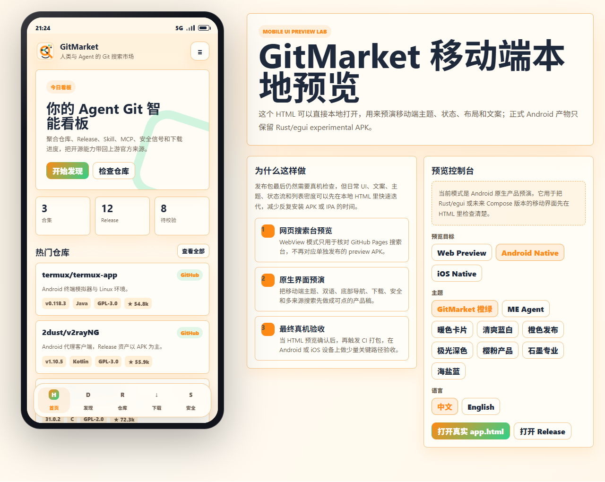

`gitmarket-android-preview` 直接打开 GitHub Pages 的搜索台，适合快速验证线上体验。
GitHub / Gitee / GitCode Release Discovery
GitMarket
一个面向开源软件包的 Release 发现层：从趋势、Explore 和多代码平台搜索进入项目，再回到上游 Release、许可证、校验信息和官方下载链接。
先把上游 Release 看清楚，再决定下载。
GitMarket 不托管、不镜像、不重签第三方二进制。它更像一个 Release 入口：把仓库、资产、许可证、哈希、签名和权限提示放到同一个决策界面里。
`gitmarket-android-experimental` 是真正客户端实验版，后续桌面 exe 也会复用这套代码。
桌面端以 Rust/egui 为主，CI 会产出可下载包，适合作为长期跨平台工具。
正式 Android MVP 仍建议 Kotlin + Jetpack Compose，用于系统权限、安装器和凭据存储。
两条路线，不混淆。
当前优先让 Rust/egui 客户端能用、能看、能产出；正式移动端再进入 Android 原生工程。
修复实验 APK 中文字体、优化移动端界面、保持桌面 exe 与 Android experimental 共用核心逻辑。
语言Rust + egui
产物APK / EXE / macOS / Linux
目标跨平台 Release 工具
当安装、权限、后台任务、系统凭据和包签名验证成为主线，再启动 Android 原生 MVP。
语言Kotlin + Jetpack Compose
系统能力PackageManager / FileProvider
目标可上架级移动体验
趋势、探索、多来源搜索放在一起。
GitHub Trending 和 Explore 负责发现方向；GitMarket 负责把项目落到 Release 资产、上游地址和安全边界。
支持仓库解析、关键词搜索、Release 读取、资产类型识别和下载统计展示。
补足中文生态和镜像项目发现，适合 Java、OpenHarmony、DevOps 等方向。
当前先作为搜索入口接入，后续通过后端代理统一多源搜索协议。
用 App Preview Lab 先看效果。
APK / IPA / exe 发版前，先用本地 HTML 预览主题、文案、列表密度、下载状态和安全页。最终再用真机或真实系统做少量关键路径验收。

接下来要打磨的四件事。
先解决真实体验的硬问题，再做视觉细节；否则页面漂亮但 APK 仍然不可用。